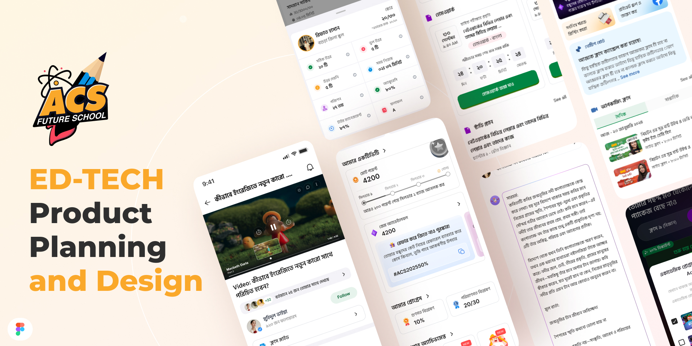

Ed-Tech Student App
Planning and designing ACS Future School's student app end to end, profiles, class journeys, homework, an in-app community and a gamification system built around good behaviour, so students never had to leave the app, or rely on Facebook, to feel like they belonged in a class.
 Figma
Figma
 Illustrator
Illustrator
 Photoshop
Photoshop

The student app surface area, activity dashboard, homework, notices, gamification and community, all planned and designed in-house.I worked as Product Manager on ACS Future School's student app, the single product every enrolled student was expected to actually open every day. That put ownership of the whole UI on my desk, not just the feature specs. I planned the product from the ground up, profiles, class structure, homework, community, gamification, then sat inside Figma myself and designed most of the screens, working alongside a dedicated designer for visual polish and prototyping rather than handing off a spec and waiting for it to come back.
This is the story of how a scattered, Facebook-dependent student experience became one app, and one design system, that a student could live inside for an entire course.
The Problem
- A student's experience after enrolling was fragmented across a payment confirmation, a Facebook group for notices, another group or Messenger thread for homework, and a spreadsheet somewhere holding their scores
- Facebook groups had no structure, no way to tell a graded submission from a random comment, no per-student progress view, and no ownership of the data or the relationship, it all lived on someone else's platform
- Students had no reason to open anything daily. There was no profile to check, no streak to keep, no visible reason to come back between live classes
- Multiple batches and multiple courses per student meant "which class is this notice for" was a constant, low-grade source of confusion inside a single shared group
The Approach
I broke the product into four systems and planned each one as its own flow before a single screen got designed, profiles, class journey, homework, community, then layered gamification across all four rather than bolting it on as a separate tab.
Profiles, built for more than one class at a time. A student was rarely enrolled in just one course, so the profile couldn't be a single static page. I designed it as an academic profile shell that stayed constant, name, streak, total points, while the activity underneath it, scores, rank, attendance, submissions, switched per enrolled batch. The dashboard I designed surfaces this per-class breakdown directly, correct and wrong answers, time spent, submission count, and a rank, so a student sees their own standing without asking anyone.
The class journey, as a path, not a folder. Rather than dumping video links and PDFs into a single feed, I planned each class as a sequence, a video lesson, a notice board scoped to that batch, and a visible progress marker through the syllabus. The video player, the notice cards and the class-switcher all needed to share one visual language so moving between an active lesson and a batch notice never felt like leaving the app.
Homework submission, tied straight to the dashboard. Submitting homework used to mean sending a photo into a chat and hoping someone saw it. I designed the submission card around a visible deadline countdown and a single confirm action, and made sure every submission fed directly back into the same activity dashboard as the profile, a submitted assignment updates the student's score, accuracy and rank in the same place they already check daily, instead of living in a separate, disconnected list.
An in-app community, so Facebook stopped being the group chat. This was the piece I pushed hardest for. Class notices, discussion and encouragement had been happening on Facebook by default, simply because that's where students already were. I designed a feed students could follow, comment on and post into without leaving the app, moderated and structured the way a class group never was, and scoped to the people actually in that batch. Once that existed, there was no longer a reason to route a student to an external platform to feel part of a class.
Gamification, rewarding behaviour, not just answers. The point system I designed wasn't tied only to quiz scores. Points accrued for the behaviours that actually keep a student enrolled and progressing, submitting homework before the deadline, attending the live class, keeping a daily streak alive, and being an active, helpful voice in the community feed, not just getting a question right. I designed the points balance, a streak-tier ladder, a referral flow with its own promo code and reward, and a package screen that let earned points offset a real purchase, so the whole system paid back into something a student actually wanted, not just a number on a badge.
Planning that layer meant sitting down with the team to define exactly which actions should earn points and how much, before it ever reached a design file, so gamification reinforced the behaviour we wanted, on-time submissions, real attendance, genuine participation, rather than becoming a checklist students could game for free points.
The Outcome
- One app, replacing a scattered mix of Facebook groups, Messenger threads and spreadsheets with a single place a student opens every day
- One design system, profile, class journey, homework and community sharing the same components, so the product reads as one app rather than four bolted-together features
- Homework and performance in one view, a submission updates the same dashboard a student already checks for their score and rank
- Community brought in-house, class discussion no longer depends on a platform the school doesn't control or own the data from
- Gamification tied to real behaviour, points earned for on-time homework, attendance and community participation, not just quiz results, with a direct path back into the packages students actually buy
What I'd Do Differently
If I started this today, I'd write the point-earning rules down as a formal spec, with edge cases and anti-gaming limits, before the first gamification screen was designed, not alongside it. The system design was sound, but a few of the numbers moved later than they should have because the rules were still being settled while the UI was already taking shape.
I'd also bring a small group of students with more than one active enrollment into the profile design earlier. The multi-class profile was the hardest flow to get right, and their version of "which class is this" would have surfaced faster than internal review did.